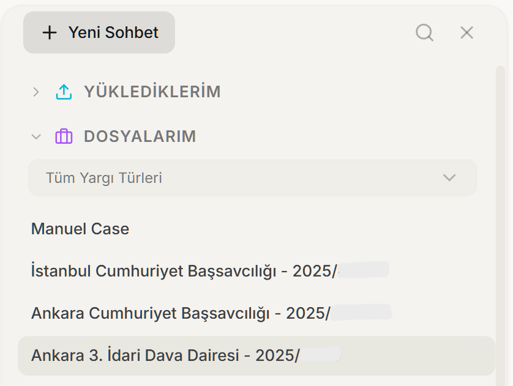
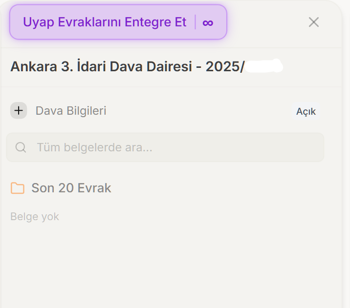

From UYAP to artificial intelligence: the future of legal technology in Turkey

Digitizing a country's justice system is not simply a matter of scanning files and uploading them to servers. Turkey has been doing this for more than two decades, and the story began far earlier than most people realize: founded in 2000, UYAP is today considered one of the most comprehensive national judicial IT systems in the world. So where does this solid foundation take us in the age of artificial intelligence?
Contents
- Why is the digitization of justice a Turkish story?
- What did UYAP achieve? From paper to screen
- Where it leads the world
- e-Government and e-signature: the bedrock of digital citizenship
- The legaltech ecosystem: young but fast
- The next wave: artificial intelligence
- Why is UYAP integration so valuable?
- Opportunities and responsible growth
- A realistic vision: the next five years
Why is the digitization of justice a Turkish story?
Most countries around the world only accelerated the digitization of justice in the past decade; Turkey set out on this path much earlier. At a time when smartphones were not yet widespread, the idea of building a national judicial network at scale was put into action to overcome paper-based processes and bureaucratic delays. This early start left behind a mature infrastructure on which we can build artificial intelligence today.
For a team like ours, focused on the Turkish language and the language of law, this foundation is priceless. Because for AI to be useful in law, the data must first be digital, accessible, and structured. Turkey met that precondition years ago.
What did UYAP achieve? From paper to screen
UYAP (the National Judiciary Informatics System) was launched in 2000 by the Ministry of Justice's Department of Information Technology, in cooperation with the domestic software and defense company Havelsan. The aim was clear: to move slow, error-prone, paper-based judicial processes into the electronic environment. Today every court, prosecutor's office, and judicial unit in Turkey operates through this system; judicial, administrative, and oversight activities are all carried out electronically.
It would be a serious mistake to think of UYAP as merely a file-storage system. The system establishes a live data network across institutions; it operates integrated with systems such as MERNİS (population registry), the Criminal Records system, TAKBİS (land registry), POLNET, the SGK (social security), the PTT (postal service), the Central Bank, the Constitutional Court, and the Court of Cassation (Yargıtay). One source summarizes this integration as 56 institutions and 181 separate fields. In other words, when a judge issues a ruling, much of the data they need is available on their screen within minutes.

Three gateways, one system
UYAP offers its users three main portals. The Lawyer Portal provides case-file review, petition submission, filing lawsuits, and e-hearings. The Citizen Portal makes case tracking possible by logging in with an e-Government password. The Institution Portal handles the exchange of information between institutions. This three-part structure turns justice into a shared space accessible not only to judges and prosecutors, but also to lawyers, citizens, and institutions.
Where it leads the world
The most striking aspect of UYAP's story is the recognition it has received internationally. In 2012 it won second place in the West Asia region of the United Nations Public Service Awards, in the "Advancing Knowledge Management in Government" category; the award ceremony took place in New York on 25 June 2012. A frequently cited assessment comes from John Hunter, the head of information technology at the European Court of Human Rights:
"UYAP is probably one of the most advanced national court justice systems in the world."
The details that made this leadership possible are impressive even today. More than 70,000 active e-signatures distributed to judges, prosecutors, and staff work alongside mobile signature support. By texting "abone" to 4060, citizens can receive instant notifications of activity on their case files through the UYAP SMS Information System. Applications such as e-Lawsuit, e-Hearing, and e-Notification brought into our lives, years ago, capabilities that many other countries are only now discovering.
e-Government and e-signature: the bedrock of digital citizenship
Behind UYAP's widespread use lies Turkey's broad digital citizenship infrastructure. As of the end of 2025, the e-Government Gateway reached more than 68 million registered users. As of December 2025, more than 9,000 services are offered on the platform, and in 2024 alone over 4.2 billion transactions were carried out.
These figures are not abstract; they describe a very concrete reality. In Turkey, accessing the state digitally is not an exception but a habit. The fact that you can log in to the UYAP Citizen Portal with an e-Government password is built precisely on this habit. For the citizen, a single identity opens dozens of doors.
The legaltech ecosystem: young but fast
A solid public infrastructure brings the private sector along with it. According to Tracxn data, there are roughly 41 legaltech (legal technology) startups in Turkey; three of them have raised funding. Over the past decade, an average of two new companies were founded each year. This may keep the country behind mature ecosystems such as the EU, the US, Israel, and Singapore; but the trajectory is clearly upward.
The first wave of the ecosystem was made up of case-law search engines. Platforms such as Emsal AI, HukukOS, Lextum, and LexChat promise meaning-based (semantic) search across the rulings of the Court of Cassation (Yargıtay), the Council of State (Danıştay), the Constitutional Court, and the Regional Courts of Justice (BAM). This is an approach that goes beyond keyword matching and tries to understand "what you mean." If you're curious about how meaning-based search works, our article what is RAG is a good place to start.
The next wave: artificial intelligence
If the first wave made "searching" easier, the second wave aims at "generating" and "understanding." AI-powered platforms no longer just retrieve rulings; they analyze the case file, flag the risky points, and produce petition drafts in UDF (UYAP document) format. Some platforms promise to pull case files directly from the UYAP Lawyer Portal and track them automatically.
There are exciting developments on the infrastructure side of this transformation as well. The open-source Yargı MCP, developed by Said Sürücü, opens up the Court of Cassation (Yargıtay), the Council of State (Danıştay), the Constitutional Court, the Court of Jurisdictional Disputes, and the UYAP Precedent Rulings to AI models as machine-readable tools via the Model Context Protocol. This approach is also aligned with Turkey's National Artificial Intelligence Strategy (2021-2025). Open infrastructures are valuable because they have the potential to lift the entire ecosystem.

From research to petition, in a single flow
At EcoFluxion, we are right in the middle of this wave. Our goal is to bring together, in a single flow, the case-law research, file analysis, and draft preparation that consume hours of a lawyer's time. With İçtiHub we provide case-law search and document analysis, and with MevzuatBot, our language model built specifically for Turkish, we add an assistant that truly commands the language of law. You can read more in our MevzuatBot article. Our system covers the four high courts (the Court of Cassation, the Council of State, the Constitutional Court, and the Regional Courts of Justice).
Why is UYAP integration so valuable?
The real value of a legal technology product is measured by how well it fits into a lawyer's daily workflow. Because UYAP is at the center of that workflow in Turkey, compatibility with UYAP is increasingly becoming a fundamental competitive advantage. Being able to pull a file from the system, produce format-compliant documents, and automate tracking is no longer a "nice feature" but is becoming almost a necessity.
| Dimension | Tool without UYAP integration | AI integrated with UYAP |
|---|---|---|
| File access | Manually downloading and uploading documents | ✓ Pulling the file directly from the system |
| Document format | Format mismatch, reformatting | ✓ UDF-compliant draft generation |
| Tracking | Manual checking | ✓ Automatic tracking of case-file activity |
| Workflow | Disjointed switching between tools | ✓ A single, uninterrupted flow |
Opportunities and responsible growth
The picture is promising; but naive optimism would be irresponsible. Law is one of the fields where the margin for error must be lowest. That's why we have to be honest about AI's journey in law.
The first risk is hallucination, that is, the model producing a nonexistent ruling as if it were real. This is not an abstract fear. In the well-known Mata v. Avianca case in the US, lawyers faced sanctions for attaching to their filings court rulings that a chatbot had fabricated and that had never existed. This example shows very clearly why it is vital to always ground AI's answers in real sources. Methods like RAG exist precisely to reduce this risk.
The second topic is data privacy. Legal files are, by their very nature, extremely sensitive. KVKK compliance, strong encryption, and not using user data to train models are no longer a marketing promise but a minimum responsibility. At EcoFluxion, this is why we placed KVKK compliance, AES-256 encryption, and the principle of never using data to train models at the center of our design from the very beginning.
The third is professional ethics and human oversight. Bar ethics dictate that responsibility always rests with the lawyer. AI is an assistant; the final decision, the signature placed before the client, and the legal responsibility must always be borne by a human.
Key takeaways
- UYAP was founded in 2000 and is today a judicial IT system covering all courts and prosecutors' offices in Turkey, regarded as a world leader.
- Integration with 56 institutions and 181 fields, more than 70,000 active e-signatures, and three separate portals make the system not just an archive but a live data network.
- With more than 68 million e-Government users, Turkey offers a mature digital foundation for AI-powered legal products.
- The new wave brings together semantic case-law search, UDF-compliant petition generation, and file analysis.
- UYAP integration is a fundamental competitive advantage; hallucination, privacy, and human oversight are indispensable responsibilities.
A realistic vision: the next five years
I would urge you to be cautious with anyone who claims that AI will replace the judge within the next five years. The more realistic, and in fact more valuable, scenario is this: AI will become the lawyer's tireless assistant. An assistant that scans case law within seconds, spots the contradiction in a file, and prepares the draft, yet always leaves the final word to a human.
This is not just a convenience for lawyers. When well designed, it has the potential to reduce the courts' workload and democratize access to justice. The research power that today only large firms can afford could tomorrow be in the hands of a one-person law office, or even a citizen seeking their rights. The solid foundation Turkey has built with UYAP and e-Government gives us the chance to construct this future faster than many other countries.
If you'd like to get to know the technology behind this vision more closely, our articles what is a large language model (LLM) and what is İçtiHub are a good next step. As for why AI built specifically for Turkish is so critical in law, we explored that in depth in our Turkish artificial intelligence article.
Are UYAP and e-Government the same thing?
No, but they are closely related. The e-Government Gateway is a general portal that provides single-point access to all of the state's digital services. UYAP, on the other hand, is an IT system dedicated specifically to the judiciary. Because you can log in to the UYAP Citizen Portal with your e-Government password, the two are connected in practice.
Will AI take lawyers' jobs?
That is not a realistic expectation. By taking on time-consuming tasks such as case-law research and file analysis, AI becomes the lawyer's assistant. Legal responsibility, strategy, and the final decision always remain with the lawyer; professional ethics require this.
Is AI producing "made-up" rulings a real risk?
Yes. This problem, known as hallucination, led to a concrete sanction in the Mata v. Avianca case in the US. That's why serious legal tools use methods like RAG that ground their answers in real rulings and legislation, and they require human oversight.
Why is UYAP integration important in a legal technology product?
Because in Turkey, UYAP is at the center of a lawyer's daily workflow. Being able to pull a file directly from the system, produce documents in UDF format, and automate tracking is becoming a fundamental requirement for the product to truly be useful.